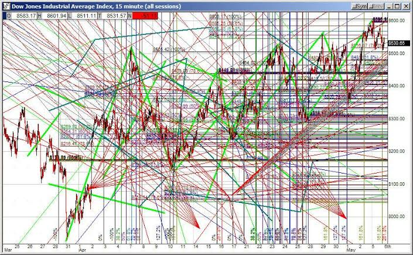

Technical Indicators
What Is a Technical Indicator? Technical indicators are heuristic or pattern-based signals produced by the price, volume, and/or open interest of a security or contract used by traders who follow technical analysis. By analyzing historical data, technical analysts use indicators to predict future price movements. Examples of common technical indicators include the Relative Strength Index (RSI), Money Flow Index (MFI), stochastics, moving average convergence divergence (MACD), and Bollinger Bands®.